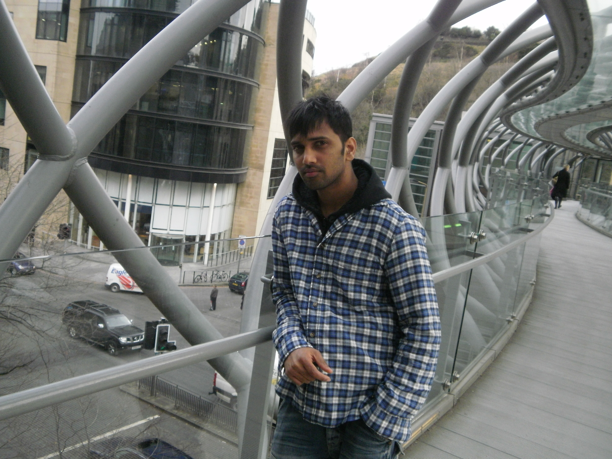

Jun 2021 – Present
Senior Support Engineer
Tech Mahindra · Hyderabad24/7 L1/L2 production support, incident and SLA management, deployment support, virtualized infrastructure administration, monitoring and ServiceNow reporting.
Hi, I'm Sudheernaidu Doppalapudi — a Senior Support Engineer focused on 24/7 production operations, incident resolution, infrastructure administration and reliable IT service delivery.

I am an IT support and infrastructure professional with experience supporting business-critical services across production environments. My work spans L1/L2 operations, incident and SLA management, Oracle database support, application monitoring and systems administration.
I work with technical teams, service owners and customers to resolve incidents, coordinate escalations, maintain service availability and document repeatable operational processes.
Support, administration and operations roles across enterprise environments.
24/7 L1/L2 production support, incident and SLA management, deployment support, virtualized infrastructure administration, monitoring and ServiceNow reporting.
Oracle database monitoring and troubleshooting, operational maintenance, ticket coordination, production deployments, backups and service management.
Application and server monitoring, incident queue management, vendor coordination, release support and customer communications.
End-user support, incident ownership, Windows troubleshooting, remote access support and escalation coordination.
HP OpenView service desk administration, user access, circuit records, reporting and NOC coordination.
Quality Control / Stock Replenishing — Tesco, Edinburgh, UK (Aug 2008 – Jan 2014). Customer service, stock operations, supplier coordination and team support.
My existing portfolio skills, expanded with the tools and technologies from my résumé.
Edinburgh Napier University, UK
2007 – 2009Amazon Web Services
Certification listed in résuméInterested in discussing IT operations, service management or infrastructure support? Reach out by email or phone.
Send an email ↗